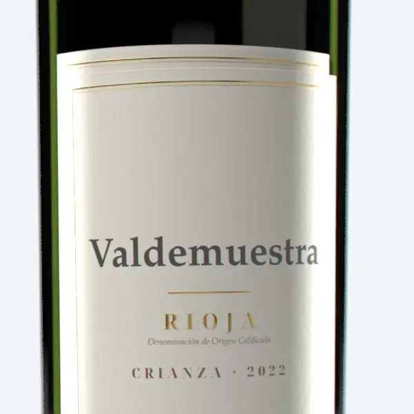
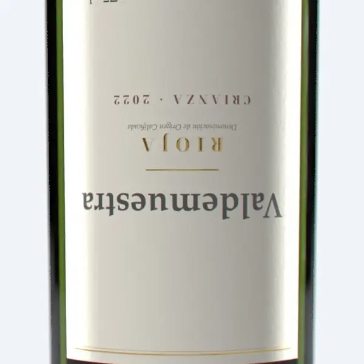
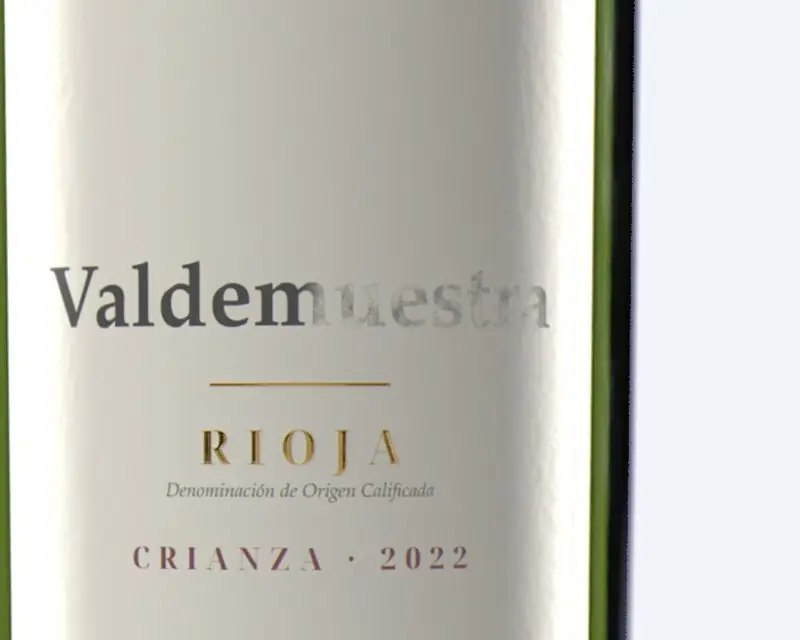
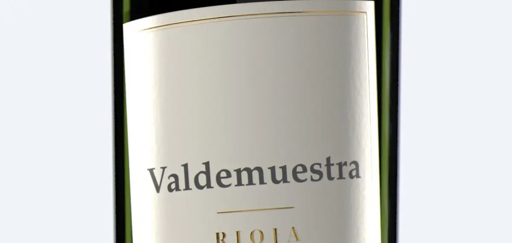

Trece controles de etiquetado y acabado en cada envase
Cuatro cámaras en color ven el envase entero, sin orientarlo, para detectar defectos de etiqueta, cápsula y código durante la producción, incluida la integridad de la etiqueta: logos, grado de alcohol y volumen.

Etiqueta levantada

Doble etiquetado

Presencia o ausencia de etiqueta

Etiqueta invertida

Integridad de la etiqueta

Roturas, arrugas y pliegues

Manchas

Defectos en la litografía

Posición e inclinación de la cápsula

Posición e inclinación de la etiqueta
- Posición relativa entre distintas etiquetas
- Lectura de código de barras
- Marcaje OCR